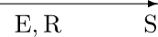
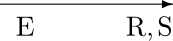

Tense and Aspect
Time flies like an arrow.… Fruit flies like a banana. —Oettinger (1966)
Many languages have grammatical means to indicate the time when an action or event occurs, or when a state or process holds. This phenomenon is called tense. In English, for example, adding the morpheme -ed to the verb walk, to form walked, indicates that the event denoted by the verb occurred before the present time. What is called aspect, on the other hand, deals with the internal constituency of actions, events, states, processes or situations. For instance, it may indicate that an action is completed or still ongoing. English typically uses the -ing form of verbs to indicate ongoing processes, as in He is building a house.
After a short introduction to basic notions of tense and aspect we briefly discuss temporal logic, and then Reichenbach’s famous distinction between speech time, event time and reference time. Event-based semantic theories treat events as ontological primitives, so in the following section we show how time can be constructed from event structures, as exemplified by the Russell-Kamp construction. These sections are followed by a discussion of the most important observations concerning lexical and grammatical aspect, including the famous imperfective paradox. Next we introduce two widely discussed theories of temporality and show how they cope with the imperfective paradox. This section is followed by one that shows how temporal information is expressed in Artificial Intelligence (AI). We use the event calculus from AI to present a solution of the imperfective paradox, by viewing it as an instance of the frame problem. The last section is devoted to gathering psycholinguistic evidence showing that at least some of the philosophical and semantic concepts discussed in this article may be cognitively real.
- 1. Introduction
- 2. Temporal Logic
- 3. Speech Time, Event Time and Reference Time
- 4. From Events to Time
- 5. Lexical and Grammatical Aspect
- 6. Intensionality versus Events
- 7. Event Calculus
- 8. Cognitive aspects
- 9. Conclusion
- Bibliography
- Academic Tools
- Other Internet Resources
- Related Entries
1. Introduction
Tense roughly means reference to the time at which events take place, or at which processes or states hold. English, for example, clearly distinguishes between past and non-past tense as in (1a) and (1b) and (1c).
- 1. (a) John promised to pay ten pounds.
- (b) I promise to pay you ten pounds.
- (c) The student will work on his thesis.
In English, verb forms are typically used to signal the time when an action or event occurs or a state holds. Thus in (1a), John’s promise was given before the present time, in (1b) the promising is simultaneous with the present time and (1c) says that the student’s work on his thesis will occur at some time after the present. It should be noted that the verb forms used to express temporal information may also be used to signal information that is not purely temporal. For instance, the present tense form in John walks characterizes a certain habit of John. And in the statement The train departs at five o’clock tomorrow, the present verb form clearly has a futurate meaning. So English distinguishes between past and non-past but not between future and non-future. Moreover, many linguists exclude future as a pure tense, because the auxiliary will may be used to express volition as in He will go swimming in dangerous water.[1]
Apart from absolute tense—exemplified by (1a)–(1c)—where the reference point from which the location in time is evaluated is the present, there is also relative tense where the reference point is not necessarily the present but may be given by context. Thus in a sentence like The student had worked on his thesis the student’s work took place at a time before a reference point in the past, in contrast to (1c) where the reference point is the present. Other instances of relative tense in English are the present perfect and the future perfect in (2a) respectively (2b).
- 2. (a) I have lost my watch.
- (b) The student will have finished his thesis next month.
The notion of aspect according to Comrie refers to “[the] different ways of viewing the internal temporal constituency of a situation” (1976: 3). It is customary to distinguish between lexical and grammatical aspect. The following are examples concerning lexical aspect. Since Vendler (1967) linguists distinguish at least four aspectual classes. These are states like know, activities like run, accomplishments like cross the street and achievements exemplified by a verb like recognize. Accomplishments describe the internal temporal constituency of a situation in a more detailed way than (say) activities. Crossing the street, for example, includes the starting of a crossing activity which goes on for some time and involves a result state that is characterized by being on the other side of the street. No such elaborate descriptions are necessary for activities or achievements. There are grammatical means of distinguishing between these aspectual classes. For example, states and achievements cannot occur with the progressive while activities and accomplishments can; more about this below in Section 5. These differences are customarily considered to be lexical differences and this area is therefore dubbed lexical aspect.
A further crucial aspectual difference is that between perfective and imperfective aspect. Comrie characterizes these notions as follows.
…perfectivity indicates the view of the situation as a single whole, without distinction of the various separate phases that make up that situation, while the imperfective pays essential attention to the internal structure of the situation. (Comrie 1976: 16)
In English this difference is often expressed by grammatical means, for instance by past tense versus past progressive. This is an instance of grammatical aspect. Slavic language often have an elaborate grammatical system to signal the difference between imperfectivity (ipv) and perfectivity (pv). Here is an example from Russian.
- 3
(a)
Petr
Peter pisal\(_{ipv}\)/*napisal\(_{pv}\)
was-writing/*wrote pis’mo,
letter, kogda
when on
he byl
was prervan
interrupted telefonnym
by-telephone zvonkom.
call. -
(b)
Petr
Peter *pisal\(_{ipv}\)/napisal\(_{pv}\)
*was-writing/wrote pis’mo
letter i
and otnes
brought ego
it na
to počtu.
post-office.
Sentence (3b) presents the writing of a letter as a single whole and it is clear that this activity was finished when the letter was brought to the post office. By contrast, (3a) focuses on an ongoing activity of letter writing in the past which is not completed because of the interruption. In fact it is consistent with the truth of (3a) that the letter was never completely written.
The natural language categories tense and aspect embody the linguistic encoding of time. From a typological point of view these categories are typical verbal categories.[2] This means that if these categories are morphologically realized in a language then these morphemes attach to the verb. Verbs usually express events, processes, actions or states[3] and the temporal morphemes locate these eventualities in time. Of course this does not mean that languages that lack such morphemes are not able to express temporal relations. They just have to choose other means for this purpose. One famous example of a language not containing temporal morphology is Mandarin Chinese. Often tense and aspect cannot be clearly separated. For example the Quiché prefix \(x-\) denotes a completed (aspect) action in the past (tense).[4]
Typologists also observed an asymmetry between past and future. Most languages that possess temporal morphology use these means to differentiate between past and non-past. There are, however, a few languages which use temporal morphology to distinguish between future and non-future.
We will not go into further details concerning the linguistic realization of tense and aspect, but present a brief and necessarily incomplete review of major philosophical and semantic theories of these notions.
2. Temporal Logic
Temporal logic was introduced by Arthur Prior (see for instance Prior 1967). Here we will sketch only propositional temporal logic (for a more thorough introduction the reader is advised to consult Gamut 1991: chapters 2 and 3) and the entry on temporal logic. Temporal logic introduces operators \(\bG\), \(\bH\), \(\bF\) and \(\bP\), which are similar to the modal operators \(\Box\) and \(\Diamond\). We summarize the intuitive meaning of these operators in Table 1.
| \(\bG\phi\) | it is always going to be the case that \(\phi\) |
| \(\bH\phi\) | it always has been the case that \(\phi\) |
| \(\bF\phi\) | it will at some stage in the future be the case that \(\phi\) |
| \(\bP\phi\) | it was at some stage in the past that \(\phi\) |
By adding the above operators to propositional logic we extend propositional logic to propositional temporal logic. Let \(q\) abbreviate the sentence Sam is working, then we are able to express the following verb tenses in temporal logic:
- 4. (a) \(q\) Sam is working.
- (b) \(\bF q\) Sam will work.
- (c) \(\bP q\) Sam worked.
- (d) \(\bP\bP q\) Sam had worked.
- (e) \(\bF\bP q\) Sam will have worked.
- (f) \(\bP\bF q\) Sam would work.
A model \(\sM\) for propositional temporal logic consists of a nonempty set \(T\) of moments of time, an earlier than relation \(\prec\) and a valuation function \(I\) which for each moment of time and each proposition letter \(q\) assigns a truth value \(I_{\sM ,t}(q)\). The following definition characterizes \(I_{\sM ,t}(\phi)\) for the temporal operators.
- \(I_{\sM ,t}(\bG\phi) = 1\) iff for all \(t' \in T\) such that \(t \prec t' : I_{\sM ,t'}(\phi) = 1\).
- \(I_{\sM ,t}(\bH\phi) = 1\) iff for all \(t' \in T\) such that \(t' \prec t : I_{\sM ,t'}(\phi) = 1\).
- \(I_{\sM ,t}(\bF\phi) = 1\) iff there exists \(t' \in T\) such that \(t \prec t' : I_{\sM ,t'}(\phi) = 1\).
- \(I_{\sM ,t}(\bP\phi) = 1\) iff there exists \(t' \in T\) such that \(t' \prec t : I_{\sM ,t'}(\phi) = 1\).
These clauses are analogous to the clauses which define the modal operators \(\Box\) and \(\Diamond\)—with \(\bG\) and \(\bH\) corresponding to \(\Box\), and \(\bF\) and \(\bP\) to \(\Diamond\)—but instead of possible worlds the valuation function takes moments of time as arguments. Therefore principle (5) is valid in any model, since the modal analogue is valid for \(\Box\) independently of the accessibility relation.
- 5. \(\bG(\phi \rightarrow \psi) \rightarrow(\bG\phi \rightarrow \bG\psi)\) (and analogously for \(\bH)\).
However, principle (6), which is often considered as valid for \(\Box\), is presumably not valid for \(\bG\).
- 6. \(\bG\phi \rightarrow \phi\)
Formula (6) is equivalent to \(\phi \rightarrow \bF\phi\). The latter formula says that if \(\phi\) is the case then \(\phi\) will be the case, which is intuitively incorrect. Suppose that \(\prec\) is irreflexive; this assumption makes sense since it means that no time point is earlier than itself. But under this assumption, Principle (6) is obviously wrong. For extensions of temporal logic and more examples concerning the correspondence between properties of models and the validity or invalidity of formulas see Gamut 1991: chapter 2.
This concludes our brief remarks about temporal logic. We now turn to an alternative approach due to the philosopher Hans Reichenbach.
3. Speech Time, Event Time and Reference Time
The notions speech time, event time, and reference time were introduced by Reichenbach (1947) in order to distinguish simple past and present perfect or, more generally, absolute and relative tense. According to Comrie (1985), who refined Reichenbach’s system (in Chapter 6 of his book on tense) speech time and event time are sufficient for the analysis of absolute time; i.e., present, (simple) past and future. But for relative tense—of which the present perfect is but one example—reference time is required. Let us explain these notions by applying them to distinguish between past and present perfect.
Consider the following examples from Steedman (1997).
- 7. (a) I have lost my watch.
- (b) Yesterday, I lost my watch.
It has often been observed that the present perfect in English has present relevance. For instance the continuation of (7a) with but I have found it again is infelicitous in English; the German translation of this sequence is acceptable, showing that the German perfect is more like a past tense (but see Kamp et al. 2015 for an extensive discussion, in Other Internet Resources). The same continuation is fine for sentence (7b). In this sense the perfect is a relative tense and the past an absolute tense in English. Let \(E\) be short for event time and let \(S, R\) stand for speech time and reference time respectively.
| Simple Past | Present Perfect |
| I saw John | I have seen John |
|  |  |
For the simple past, both event time and reference time are situated on the time line before speech time. In case of the perfect, R and S are simultaneous and E is earlier than both R and S. Intuitively, reference time represents the perspective from which an eventuality is perceived on the time line. This is not a purely semantic theory of tense like temporal logic, rather it is a pragmatic theory of tense. In particular, reference time (in contrast to event time) has to be mutually known by communication partners. When using the present perfect, reference time is known since it coincides with speech time. However, reference time is not necessarily known when the past tense is used, since it is just required to be earlier than speech time and to coincide with event time. This may explain why sentences in the past sound strange when uttered out of the blue. Steedman (1997) presents the following examples:
- 8. (a) *Chapman breathed a sign of relief.
- (b) When Nixon was elected, Chapman breathed a sigh of relief.
The past-tensed sentence (8a) uttered out of the blue is infelicitous, while sentence (8b) is fine, since in this case the when-clause introduces the reference time.
This is by no means the complete story of the perfect. For example, Comrie (1976) distinguishes four typical uses of the perfect: the perfect of result, the experiential perfect, the perfect of persistent situation and the perfect of recent past. For an extensive recent discussion the reader is advised to consult Kamp et al. 2015 (in Other Internet Resources).
The following table summarizes the positions of event time, reference time and speech time for other tenses:
| E, R, S | Sam is working. |
| S — E, R | Sam will work. |
| E, R — S | Sam worked. |
| E — R — S | Sam had worked. |
| S — E — R | Sam will have worked. |
| R — E — S | Sam would work. |
Comrie (1985) and Gamut (1991) point out that this cannot be a complete account for temporal constructions that occur in natural languages. For instance the temporal profile of the sentence Sam would have worked cannot be analyzed by using a single reference time. This is one reason for the extended requirements for a formal theory of tense proposed by Comrie (1985: chapter 6). Furthermore, Blackburn and Jørgensen (2016) combine the key insights of Prior and Reichenbach in the framework of hybrid tense logic suggesting that the two approaches are fully compatible with each other.
4. From Events to Time
In event semantics following Davidson (1967) events are commonly taken as ontological primitives. This raises the philosophical question how events and times relate to each other. A construction, due to Russell, Wiener and Kamp, shows that the time line can be constructed from events. We will briefly sketch this construction before we move on to lexical and grammatical aspect.
Russell remarked:
Even if there be a physical world such as the mathematical theory of motion presupposes, impressions on our sense-organs produce sensations which are not merely and strictly instantaneous, and therefore the objects of sense of which we are immediately conscious are not strictly instantaneous. Instants, therefore, are not among the data of experience and must be either inferred or constructed. It is difficult to see how they can be validly inferred; thus we are left with the alternative that they must be constructed. (Russell 1914: lecture IV)
Kamp (1979) took up Russell’s ideas and slightly modified them. The construction takes event structures as primitives from which the structure of time, i.e., a total order, can be derived.
An event structure \(\langle E, P, O\rangle\) simply consists of a set of events \(E\) and the relations \(P\) (precedes) and \(O\) (overlaps) and is characterized by axioms A1–7.
Given an event structure satisfying these axioms, the set of instants and their strict linear ordering can be constructed according to definition 2. The idea is to identify an instant with the maximal set of pairwise overlapping events. Instants are thus conceived of as abstractions over events that happen (or go on) simultaneously. Events linked by the precedence relation will give rise to distinct instants.
- An instant of \(\langle E, P, O\rangle\) is a maximal subset of
pairwise overlapping events, i.e., \(i\) is an instant of \(\langle E,
P, O\rangle\)iff
- \(i \subseteq E\)
- For any \(a, b \in i : O(a, b)\)
- if \(e \in E\) but \(e \not\in i\) then there is \(d \in i\) such that \(\neg O(d, e)\)
- Let \(I\) be the set of instants of \(\langle E, P, O\rangle\)
- For \(i_1, i_2 \in I\) put \(i_1 \lt i_2\) iff there are \(e_1 \in i_1\) and \(e_2 \in i_2\) such that \(P(e_1, e_2)\)
We will first illustrate the Russell-Kamp construction by way of an example and then show that \(\langle I,\lt \rangle\) has the properties specified in Theorem 1: it is a strict linear ordering which gives rise to an interval structure.
Example 1. Let \(E = \{a, b, c, d, e\}\) and \(P\) be the set of ordered pairs \(\{(a, c), (a, d), (a, e), (b, e), (c, e)\}\). Given A7, the relation \(O\) consists of the set of pairs \(\{(a, b), (b, c), (b, d), (c, d), (d, e)\}\). \(E\) contains three maximal subsets of pairwise overlapping events, that is, instants \(i_1 = \{a, b\}\), \(i_2 = \{b, c, d\}\) and \(i_3 = \{d, e\}\). Furthermore, \(i_1\), \(i_2\) and \(i_3\) are linearly ordered as \(i_1 \lt i_2 \lt i_3\) because \(a \in i_1\), \(c \in i_2\) and \(P(a, c)\) hence \(i_1 \lt i_2\), and \(c \in i_2\), \(e \in i_3\) and \(P(c, e)\) hence \(i_2 \lt i_3\), and similarly for \(i_1 \lt i_3.\)
A proof of the following theorem can be found in (Kamp 1979: 379).
Once having constructed the set \(I\) it is possible to define time intervals and these, in turn, can be used to measure the temporal extent of an event. In Example 1, for example, \(a\) goes on in the interval [\(i_1], b\) in [\(i_1, i_2], c\) in [\(i_2], d\) in [\(i_2, i_3\)] and \(e\) in [\(i_3\)]. Corollary 1 guarantees that these intervals can be constructed (Kamp 1979: 379).
Corollary 1. For each \(e \in E\), the set \(e' =\{i \in I \mid e \in i\}\) is a non-empty interval of \(\langle I,\lt \rangle.\)
Proof: If \(i_1, i_2 \in e'\) and \(i_1 \lt i \lt i_2\), it has to be shown that \(e \in i\), too. Suppose it is not. Then there is \(d \in i\) such that \(\neg O(d, e)\), hence \(P(d, e)\) or \(P(e, d)\). In the first case \(i \lt i_1\) and in the second case \(i_2 \lt i\). Both yield a contradiction.\(\Box\)
We cannot give further details here, but refer the interested reader to Thomason (1986) who discusses how to construct time as a continuum—isomorphic to the real numbers—and uses a different construction originally proposed by Walker (1947). Empirical evidence for events being ontological primitives will be presented in section 8 where we review psychological studies on event perception. We will now move to lexical and grammatical aspect, that is the expression of event types and how a given event is conceptualized, which form basic concepts in linguistic theory.
5. Lexical and Grammatical Aspect
Linguists distinguish four or five lexical aspectual classes or Aktionsarten. The following four were introduced by the philosopher Zeno Vendler (1967: chapter four) on the basis of earlier work by philosophers such as Kenny, Ryle and Aristotle (see also the entry on events). For a formal definition of Aktionsart the reader is referred to van Lambalgen and Hamm (2005: 85 ff).
| States | Activities | Accomplishments | Achievements |
|---|---|---|---|
| know | run | cross the street | recognize |
| be beautiful | swim | draw a circle | reach |
| believe | walk | paint a picture | find |
In addition, linguists often assume that verbs like flash, spot and blink form an extra class—the class of semelfactives or points (see Smith 1991).
A useful notion for distinguishing Aktionarten is the event nucleus introduced by Moens and Steedman (1988). The event nucleus is constructed from a preparatory phase, a culminating event and a consequent phase. Activities only refer to the preparatory phase, states only to the consequent phase, achievements to the culminating event and to the consequent phase and finally accomplishments to all three parts of the event nucleus.
Vendler proposed several linguistic tests for distinguishing these verb classes. We will present only the most important ones here; for a much more comprehensive list the reader is referred to Dowty (1979: 60). The first test separates non-statives from statives. Only non-statives occur in the progressive.
- 9. (a) *Sam is knowing the answer.
- (b) Sam is running.
- (c) Sam is writing a letter.
Accomplishment verbs prefer \(in\)-adverbials as temporal modifiers, whereas activity verbs allow only for-adverbials.
- 10. (a) ?Sam wrote a letter for an hour.
- (b) Sam wrote a letter in an hour.
- (c) Sam swam for an hour.
- (d) *Sam swam in an hour.
Achievement verbs are usually infelicitous with for-adverbials but allow the combination with \(in\)-adverbials.
- 11. (a) Sam reached the summit in five hours.
- (b) *Sam reached the summit for five hours.
The last test we mention here concerns the different entailment patterns of activities and accomplishments in the progressive. Activities in the past progressive entail their past reading but accomplishments in the past progressive don’t.
- 12. (a) Sam was pushing a cart. \(\Rightarrow\)
- (b) Sam pushed a cart.
- 13. (a) Sam was building a house. \(\not\Rightarrow\)
- (b) Sam built a house.
This is an instance of the famous imperfective paradox. Of course, taken literally this is not a paradox. Nevertheless the entailment patterns (12) and (13) pose a significant problem for any formal theory of tense and aspect. For instance, the first formal proposal for truth conditions of sentences in the past progressive stated that a sentence S in the past progressive is true if and only if there exists an open interval before the speech time at which the sentence without the progressive is true. According to definition 1.4 this immediately validates pattern (12) but without qualifications this truth definition does not account for pattern (13). Sections 6 and 7 contain extensive discussion of the imperfective paradox.
Vendler thought of the Aktionarten as lexical properties of verbs. That this position is dubious was pointed out by many linguists, in particular by Dowty (1979) and Verkuyl (1993). For a simple case, consider the verb drink. If we assume that being an activity is a lexical property of this verb, then surely by combining it with the noun wine this property is preserved for the complex phrase drink wine. However, if we combine the verb drink with the noun phrase a bottle of wine we turn an activity into an accomplishment. The converse problem arises if we assume that being an accomplishment is a lexical property of drink. This phenomenon of aspectual reinterpretation was dubbed coercion in Moens and Steedman (1988). In Section 6.1 we will sketch a systematic solution for these types of coercion in mereological semantics (Krifka 1989, 1992).
Aktionsart is not even definitely fixed at the VP-level. The verb arrive in
- 14. (a) Chapman arrived.
- (b) *Chapman arrived all night.
is an achievement, as demonstrated by the ungrammaticality of (14-b). But if we choose a bare plural as subject it is turned into an activity and sentence (15) is grammatical.
- 15. Visitors arrived all night.
Therefore a final decision about aspectual class cannot be reached below the sentence level. Steedman’s famous sentence (16)
- 16. It took me two years to play the “Minute Waltz” in less than sixty seconds for one hour without stopping.
shows that coercion can be iterated and that aspectual class can switch back and forth in this iteration process. We close this section with two further examples of aspectual coercion. In the first one a stative verb is transformed into an activity.
The verb resemble is a stative verb and therefore (17a) is unacceptable but (17b) is fine.
- 17. (a) *She is resembling her mother.
- (b) She resembles her mother.
However, if we add more and more every day to (17a) thus forming
- 18. She is resembling her mother more and more every day.
we get an acceptable result. This is due to the phrase more and more every day which coerces a state into an activity. Our last example is about temporal modification with for-adverbials. As pointed out above accomplishments are usually rather bad with for-adverbials. They require \(in\)-adverbials. But consider sentence (19) from van Lambalgen and Hamm (2005).
- 19. Pollini played Opus 111 for two weeks.
This sentence seems to be fine. However it is not interpreted as an accomplishment any more but is reinterpreted as an iterated activity. To get this reading, a lot of non-linguistic knowledge is required. First, one has to guess that Opus 111 refers to Beethoven’s last piano sonata and moreover one has to be aware that this piece lasts about 25 minutes. Under these assumptions, sentence (19) says that Pollini played Opus 111 repeatedly within a time span of two weeks. Formal accounts of coercion phenomena are contained in Egg (2005), van Lambalgen and Hamm (2005) and Steedman (1997) among others. The reader is also advised to consult Steedman’s updated manuscript, The Productions of Time (see the Other Internet Resources). Processing studies of coercion are reviewed in Bott (2010); see also Section 8.
6. Intensionality versus Events
The most influential approach to solving the imperfective paradox is due to Dowty (1979). The basic idea is to treat the progressive as a modal operator \((\Box)\) but restrict its domain to inertia worlds. The notion of an inertia world is characterized informally. An inertia world is exactly like the real world up to the time of evaluation; after this it may differ from the real world but is assumed to be as similar to the real world as possible. Given this notion, the following definition introduces truth conditions for sentences in the progressive.
Definition 3. PROG\((\phi)\) is true with respect to interval \(I\) and world \(w\) if and only if \(\forall w' \in IE(w)\) there exists an interval \(I' \supseteq I\) such that \(\phi\) is true with respect to \(I'\) and \(w'\). In addition \(I\) should not be the final subinterval of \(I'\). \(IE(w)\) is the set of inertia worlds for \(w\).
Definition 3 does not yet account for the different entailment patterns of activities and accomplishments. Two additional assumptions are required. The first concerns activities; the second, accomplishments.
- 20. If \(\phi\) is an activity that is true with respect to interval \(I\), then \(\phi\) is true with respect to any sufficiently large subinterval of \(I\).
Accomplishments like Mary draw a circle are split up into two parts, an activity part Mary draw that satisfies principle (20) and a result part which is characterized by the existence of a circle. Both parts are connected by a causality relation CAUSE.
- 21. CAUSE[Mary draw, A circle comes into existence]
Thus an accomplishment has a richer internal structure than an activity.
With these additional requirements, the inference patterns for activities and accomplishments follow. Let us first show that Mary was pushing a cart implies Mary pushed a cart. Assume that the first sentence is true in \(w\) with respect to speech time \(S\). Then Mary be pushing a cart is true in \(w\) with respect to an interval \(I\) before \(S\). According to Definition 3, Mary push a cart is then true in every inertia world \(w' \in IE(w)\) with respect to an interval \(I' \supseteq I\). Because of postulate (20), Mary push a cart is true in every \(w' \in IE(w)\) with respect to interval \(I \ (I\) is a subinterval of \(I')\). Now, the definition of inertia worlds implies that Mary push a cart is true in \(w\) with respect to interval \(I\). This means that Mary pushed a cart is true in \(w\) with respect to speech time \(S\).
A completely analogous argument shows that Mary was drawing a circle implies Mary drew. But postulate (20) only holds for the first part of accomplishments; the result part is only required to hold in every inertia world \(w'\) with respect to a larger interval \(I'\), normally one after speech time. Since the inertia worlds after \(S\) may differ from \(w\) and since the subinterval property (20) is not required to hold for the result parts of accomplishments, the stronger conclusion that Mary drew a circle does not follow.
Many researchers assume that inertia worlds introduce a notion of normality for the semantic analysis of the progressive. The thunderbolt in example (22) from Landman (1992) seems to break the normal development of the real world. Dowty’s analysis seems to be tailored for cases like this one.
- 22. Mary was crossing the street, when a thunderbolt from heaven struck her down.
However, objections have been raised to the normality interpretation of inertia. The first one is attributed to Frank Vlach in Ogihara (1990). Consider sentence (23)
- 23. John was crossing the street, when he was hit by a truck.
and a situation in which the truck is only a few centimeters away from John. Moreover the truck’s speed is such that it is impossible for it to stop before hitting John. In this situation, the normal course of events is such that John will never reach the other side of the street. Therefore, given definition 3, sentence (23) should be false under these circumstances. This is intuitively incorrect. A similar objection was raised by Bonomi (1997).
On the other hand, the normality interpretation seems to be at least questionable. Consider the following example from Naumann and Piñón (1997).
- 24. Rebecca was running across the minefield.
This does presumably not mean that when you are running across a minefield, you normally will eventually get to the other side.
Note that these objections all make use of a particular informal interpretation of the notion inertia. Judging the validity of these objections to Dowty’s theory in a precise way therefore requires an explicit theory of this notion with exact empirical predictions.
Dowty analyzes the progressive as an intensional construction. Does the progressive satisfy the standard philosophical tests for intensional constructions, that is, the invalidity of substitution of co-designative proper names and the impossibility of pulling the existential quantifier out of the context created by the intensional construction (see Bealer and Mönnich (1989) for a more detailed discussion)? Let us consider accomplishments, for example sentence (25).
- 25. Jackson Pollock was painting Ruth Rendel.
Given that Ruth Rendel and Barbara Vine are co-designative proper names, sentence (25) implies that Jackson Pollock was painting Barbara Vine. Therefore the first test fails. Co-designative proper names are substitutable salva veritate in progressive constructions. The second one, however, applies, since
- 26. Carlos was building a house.
does not imply that there is a house that Carlos was building. These tests therefore don’t provide a clear answer to the question whether the progressive is an intensional construction. Even if the answer is yes, the progressive is certainly a different type of intensional construction than, for example, propositional attitudes like believe or doubt.
An extensional alternative was developed by Parsons (1989, 1990). Parsons, like Davidson (1967), assumes that first-order quantification over events is possible. But unlike Davidson, Parsons assumes quantification over eventualities in the sense of Bach (1986), which includes events proper but also states, processes and so on. Like Dowty, Parsons supposes that eventualities are split up into a development phase and a culmination phase. In order to represent this difference in first-order logic two new predicates are introduced, Cul\((e, t)\) and Hold\((e, t)\). The intuitive meaning of the first is that eventuality \(e\) culminates at time \(t\). The second one says that \(e\) is either an eventuality in its development phase or that \(e\) is a state. Given these assumptions a sentence like Mary drew a circle is translated into first-order formula (27), \(S\) is again short for speech time.
- 27. \(\exists x(Circle(x)\,\wedge\) \(\exists e\exists I[I \lt S \wedge Drawing(e)\ \wedge\) \(Subject(e, Mary)\ \wedge\) \(Object(e, x)\ \wedge\) \(Cul(e, I)])\)
The semantic effect of the progressive consists in transforming events into states.
If ‘\(A\)’ is an event verb, then ‘be \(A\)-ing’ is to be treated semantically as a state verb; otherwise, ‘be \(A\)-ing’ is to be treated the same as ‘\(A\)’. (Parsons 1989: 222)
With this assumption the logical representation of Mary was drawing a circle is (28).
- 28. \(\exists x(Circle(x)\,\wedge\) \(\exists e\exists I[I \lt S \wedge Drawing(e)\ \wedge\) \(Subject(e, Mary)\ \wedge\) \(Object(e, x)\ \wedge\) \(Hold(e, I)])\)
Obviously (27) does not follow from (28). But (28) does imply that there is a circle Mary was drawing. Of course this circle may not be complete. This means that Parson’s ontology is bound to include incomplete objects. For a discussion of incomplete objects see for instance Baggio and van Lambalgen (2007).
According to the quotation above, the progressive doesn’t change anything in the case of activities. Therefore Mary pushed a cart and Mary was pushing a cart are predicted to be equivalent.
Parsons’ theory rests on the difference between the predicates Cul and Hold. This difference is left to intuition. No axiomatisation of these predicates is given. This is one of the objections made in Zucchi (1999). Zucchi also notes that under certain circumstances it is possible to derive a specific version of the imperfective paradox in Parsons’ theory. A careful discussion of Dowty’ and Parsons’ approaches and a combination of the two systems is contained in Landman (1992).
Another approach to the imperfective paradox and - more generally - non-culminating accomplishments was proposed by Copley and Harley (2015). They abandon event semantics and propose instead a framework using situations and forces as primitives. Forces lead to transitions between situations. Their theory is motivated by the observation that across languages, non-culminating accomplishments are crosslinguistically in fact a very common phenomenon. Interestingly, these non-culminating readings are per default conveyed by less complex expressions than complete events. Often, it is the perfective and not the imperfective that is marked linguistically. Prima facie, this is a problem for analyses such as Dowty's which assume that the imperfective paradox in accomplishments hinges on an additional operator such as PROG. This is where Copley and Harley's causal analysis comes into play. Their force-theoretic account does not run into this problem because causally efficacious forces always take effects ceteris paribus, for instance, an effect may not occur do to the occurrence of a counter force preventing the effect. They develop a compositional semantic framework linking forces to the argument structure of the sentence. At the present stage of the theory, however, some of the basic concepts also call for axiomatisation. For instance, it is crucial to gain a proper understanding of what it means for a situation to be a ceteribus paribus successor situation for some initial situation. For this purpose, their semantic framework must be connected to a theory of causality connecting linguistic meaning to cognition and causal reasoning via a conceptual level integrating the two.
We will come back to the imperfective paradox in Section 7 where we combine linguistic theory with event theories from artificial intelligence. This will give us a formalization of ceteris paribus from which a new solution to the imperfective paradox will follow.
6.1 Nominal Reference and Temporal Constitution
Let us now show that events are also useful for a systematic account of certain types of coercion that were mentioned above in Section 5.
Intuitively there is a close link between the nominal predicates wine and a bottle of wine and their verbal counterparts (29-a), (29-b).
- 29. (a) drink wine
- (b) drink a bottle of wine
Whenever there are two entities to which wine applies, this predicate applies to their collection as well. The predicate a bottle of wine does not have this property. Whenever there are two different entities to which a bottle of wine applies, this predicate does not apply to their collection. The first predicate is cumulative (see Definition 4) the second is quantized (see Definition 5). A similar argumentation applies to the difference between the activity drink wine and the accomplishment drink a bottle of wine. It was observed by many linguists that the combination of a verb like drink with a cumulative predicate like wine yields an atelic predicate like (29-a), whereas its combination with a quantized predicate yields a telic predicate like in (29-b).
In order to account for these intuitions in a precise way Krifka assumes that the parts of the structure \(\mathcal{M} = (\mathfrak{O}, \mathfrak{E}, \mathfrak{T})\) consisting of objects \(\mathfrak{O}\), events \(\mathfrak{E}\) and times \(\mathfrak{T}\) are each structured as complete join semi-lattices without a bottom element (see Grätzer, 1978). This means that we have a two place relation \(\sqcup\) (join) and relations \(\sqsubseteq\), \(\sqsubset\), and \(\bigcirc\) (part, proper part and overlap) that impose part-whole relations (mereologies, see the entry mereology) on the sets of objects, events and times. We cannot list all the properties that must hold for these structures to serve as admissible interpretations of natural language but we illustrate these properties by giving two examples.
- \(\forall x, y \exists z(x \sqcup y = z)\) (completeness)
- \(\forall x, y (x \bigcirc y \leftrightarrow \exists z (z \sqsubseteq x \wedge z \sqsubseteq y))\) (overlap)
Definition 4. Cumulative (CUM) reference:
\(\forall P (CUM(P) \leftrightarrow \forall x, y(P(x) \wedge P(y) \rightarrow P(x \sqcup y)))\).
Definition 5. Quantized (QUA) reference:
\(\forall P(QUA(P) \leftrightarrow \forall x, y (P(x) \wedge P(y) \rightarrow \neg y \sqsubset x))\).
Definitions 4 and 5 now allow for a formal descripion of the referential difference between wine and a bottle of wine.
- 30. (a) wine \(\subseteq \mathfrak{O} \wedge CUM\)(wine)
- (b) a bottle of wine \(\subseteq \mathfrak{O} \wedge QUA\)(a bottle of wine)
For verbal predicates Krifka assumes that they are event denoting and moreover that thematic relations like agent, theme, etc are represented as in (31-b). Thematic roles of verbs are crucial since they determine which verbs give raise to the drink wine versus drink a bottle of wine distinction.[5]
- 31. (a) Mary runs.
- (b) \(run(e)\wedge Agent(e, Mary)\)
It is now straightforward to fix the reference of the verbal predicates in a way that exhibits their simlarity to the respective nominal predicates.
- 32. (a) drink wine \(\subseteq \mathfrak{E} \wedge CUM\)(drink wine)
- (b) drink a bottle of wine \(\subseteq \mathfrak{E} \wedge QUA\)(drink a bottle of wine)
Cumulativity of nominal predicates corresponds to atelicity in the verbal domain and a quantized nominal predicate corresponds to a telic verbal predicate.
There is still something missing. How can the impact of the reference of the nominal predicates on the aspectual class be derived formally? We will present only the basic idea of Krifka's construction here. Let \(w\) be the predicate corresponding to wine and let \(e\) be the event predicate representing drink wine. The basic idea is that an object is changed by the influence of such an event in a gradual manner. Since we know that \(w\) is cumulative this predicate also applies to proper parts of \(w\), say \(w'\). Then given that drink wine can be applied to \(e\) it should also be possible to apply it to a proper part of \(e\), say \(e'\). Quantized predicates show a different behaviour. Since a bottle of wine is quantized no proper part of it is a bottle of wine and therefore no proper part of \(e\) can be described as drink a bottle of wine. To account for this intuitive explanation in formal terms it is necessary to specify certain preservation properties for thematic roles since these roles relate the algebraic structure of events and the algebraic structure of objects. This means that notions like summativity, uniqueness of objects etc. have to be defined for relations between events and objects; i.e. thematic roles.
Here we will illustrate these concepts with only one example, summativity (SUM).
Definition 6.
\(\forall R [SUM(R) \leftrightarrow \forall e, e', x, x'[R(e, x)
\wedge R(e', x') \rightarrow R(e\sqcup e', x \sqcup
x')]]\).
Summativity says that the sum-operation \(\sqcup\) on events and objects is preserved under summative relations on events and objects. For instance if we have two distinct events of drinking a bottle of wine we get an event of drinking two bottles of wine.
With this formal background it is now possible to state exactly when a predicate of events corresponding to a verb-phrase is cumulative, telic etc.. Again we will just state one result. Let \(\phi = \{ e|\exists x(\alpha(e) \wedge \delta(x) \wedge \theta(e, x))\}\) be such a predicate where \(\alpha\) represents a verb - say draw - \(\delta\) the nominal predicate - pictures - and \(\theta\) a thematic relation - say theme. It then follows that one set of conditions for \(\phi\) being cumulative is that \(\delta\) is cumulative and \(\theta\) is summative. An example is the verb phrase draw pictures. Similar results characterize, iterative, telic, atelic etc. readings.
This concludes our glimpse of events in linguistic semantics; Readers interested in a more comprehensive treatment of this issue may find Champollion (2014, see Other Internet Resources) a useful contemporary source. We now come back to the imperfective paradox and turn to an event calculus that was developed in artificial intelligence.
7. Event Calculus
In the following section we will show that the imperfective paradox is an instance of the frame problem prominent in Artificial Intelligence (AI). To this end we will explain the event calculus, which is an extension of McCarthy’s situation calculus (McCarthy 1977) developed by Kowalski and Sergot (1986). Then we will indicate how the event calculus leads to a formalization of natural language tense and aspect by analysing the imperfective paradox.
Consider narrative (33).
- 33. Yesterday morning Vincent loaded the gun. Then he smoked a cigarette. After smoking he pointed the gun at Fred and pulled the trigger.
Assuming that shooting at somebody with a loaded gun will lead to the death of that person, we will interpret the discourse in a way that Fred eventually gets killed. Arriving at this inference is, however, not a trivial task. In (33) the frame problem is exemplified in the form of the Yale Shooting Scenario (Hanks and McDermott 1986). To demonstrate this, we will start with a very simple calculus—a variant of the Simple Event Calculus by Shanahan (1997) which only incorporates a very basic notion of instantaneous change. Later we will add axioms in order to deal with continuous change and then return to the imperfective paradox. In short, we will argue that the paradox can be viewed as an instance of the frame problem.
7.1 The Yale Shooting Scenario
Suppose we have three kinds of actions/events—Load, Smoke and Shoot—and three time dependent properties, the fluents Alive, Loaded and Dead.[6] Besides actions and fluents we will also need instants of time in our basic ontology. The predicates listed in Table 4 are used to express actions and their effects and to locate them in time.
| Formula | Meaning |
|---|---|
| Initiates\((\alpha , \beta , \tau)\) | Fluent \(\beta\) starts to hold after action \(\alpha\) at time \(\tau\) |
| Terminates\((\alpha , \beta , \tau)\) | Fluent \(\beta\) ceases to hold after action \(\alpha\) at time \(\tau\) |
| Initially\((\beta)\) | Fluent \(\beta\) holds from time 0 |
| \(\tau_1 \lt \tau_2\) | Time instant \(\tau_1\) is before time instant \(\tau_2\) |
| Happens\((\alpha , \tau)\) | Action \(\alpha\) happens at time \(\tau\) |
| HoldsAt\((\beta , \tau)\) | Fluent \(\beta\) holds at time \(\tau\) |
| Clipped\((\tau_1,\beta ,\tau_2)\) | Fluent \(\beta\) is terminated between times \(\tau_1\) and \(\tau_2\) |
Table 4. Predicates of the simple event calculus (from Shanahan 1999)
The predicates are related to each other by a set of four simple axioms (34)–(37). In these axioms, all variables are assumed to be universally quantified with maximal scope. We will come to the semantics of the implication when we have introduced the complete scenario.
- 34. \(Initially(f) \rightarrow HoldsAt(f, 0)\)
- 35. \(Initially(f) \wedge \neg Clipped(0, f, t) \rightarrow HoldsAt(f, t)\)
- 36. \(Happens(a, t_1) \wedge Initiates(a, f, t_1) \wedge t_1 \lt t_2\ \wedge\) \(\neg Clipped(t_1, f, t_2) \rightarrow HoldsAt(f, t_2)\)
- 37. \(Happens(a, t) \wedge t_1 \lt t \lt t_2 \wedge Terminates(a, f, t) \rightarrow\) \(Clipped(t_1, f, t_2)\)
The first three axioms state the conditions under which a fluent can hold at a time \(t\): either it holds right from the start or it is initiated at a time \(t_1\) before \(t\) without a terminating action occurring in between the two. The fourth axiom defines the predicate Clipped\((t_1, f, t_2)\) saying that a fluent \(f\) is clipped between times \(t_1\) and \(t_2\) if it is terminated by some action \(a\) happening between \(t_1\) and \(t_2\). Simplifying a whole lot, the axioms (30)–(33) formalize the notion of instantaneous change, such as two balls colliding or somebody dying. Moreover, they embody a notion of inertia: fluents continue to hold unless terminated.
Next, we have to translate the discourse (33) into the Simple Event Calculus. The first set of formulas (38)–(40) states what the mentioned actions do. These formulas provide a crude sketch of the lexical meaning of load, smoke and shoot. The effect of a Load action is to make the fluent Loaded hold, a Shoot action makes Dead hold (and Alive not hold) with Loaded being a precondition. Finally, Smoke is assumed to have no effects (thus, there are no rules involving Smoke).
- 38. \(Initiates(Load, Loaded, t)\)
- 39. \(HoldsAt(Loaded, t) \rightarrow Initiates(Shoot, Dead, t)\)
- 40. \(HoldsAt(Loaded, t) \rightarrow Terminates(Shoot, Alive, t)\)
(33) comprises a Load action followed by a Smoke action followed by a Shoot action. Using four arbitrarily chosen time points \(T_1\)–\(T_4\) the discourse can be represented as follows:
- 41. \(Initially(Alive)\)
- 42. \(Happens(Load, T_1)\)
- 43. \(Happens(Smoke, T_2)\)
- 44. \(Happens(Shoot, T_3)\)
- 45. \(T_1 \lt T_2 \lt T_3 \lt T_4\)
From this little theory we want to derive HoldsAt(Dead, \(T_4)\). Unfortunately, this sequent is not valid in the classical sense of being true in all models which satisfy the theory. Think for example of a situation in which the gun obscurely becomes unloaded while Vincent is smoking. In such a model, the precondition of the shooting action is clearly not met and thus the action will lack any effects. Note that nothing rules out such a model since it is entirely consistent with our theory. We thus have to further constrain the models under consideration. Crucially, we have to find a way to deal with the non-effects of actions; this is the famous frame problem.
How to proceed? From the fact that no terminating action was mentioned, we want to conclude that no terminating event occurred. To do so, we have to strengthen the assumptions of the theory in a way that only those events are assumed to occur which have been explicitly stated in the discourse. The discourse model should be minimal, linking discourse understanding intimately to closed world reasoning. It is important to note that this strategy forces reasoning to be non-monotonic: adding further premises to a theory can make inferences invalid that were valid before (see the entry on non-monotonic logic).
7.2 The completion of a program
There are different techniques for formalizing this line of reasoning; one is circumscription (e.g., Shanahan 1997). Here, we will use the completion of a logic program technique, adopting the Event Calculus of van Lambalgen and Hamm (2005). Taking a closer look at the formulas of the theory \(((34) \wedge \ldots \wedge (45))\), an important feature to notice is that formulas come in two variants: they are either facts consisting of a simple predicate expression or they express rules with a conjunction of potentially negated formulas to the left of the implication sign and a single positive atomic expression to its right (in logic programming the former is called the body and the latter is called the head of a clause). We will now illustrate how the completion of a simple logic program is computed. Consider the description of a situation where the gun gets loaded at time 1 and a shooting event happens at time 10. This situation is stated in the following program:
- 46. \(Happens(Load, 1)\)
- 47. \(Happens(Shoot, 10)\)
The uncompleted program does not yet rule out intervening events. It is, for example, consistent with an Unload event occurring at time instant 9. The completion of the program should tell us that (46) and (47) were the only events. The completion is computed according to the following procedure.[7] We start with the facts in (46) and (47). Both of these are Happens formulae. The completion of the program intuitively corresponds to an assertion that, given this program, Happens\((e, t)\) can only mean Load occurring at 1 or Shoot occurring at 10. We therefore first substitute variables for the constants and write the following disjunction:
- 48. \((e = Load \wedge t = 1) \vee(e = Shoot \wedge t = 10)\)
Then, we universally quantify over the variables \(e\) and \(t\) and strengthen the implication to a bi-implication:
- 49. \(\forall e\forall t(Happens(e, t)\ \leftrightarrow\) \((e = Load \wedge t = 1)\ \vee\) \((e = Shoot \wedge t = 10))\)
From (49) it follows that there were no intervening events. Strengthening the implications to bi-implications makes it impossible that a head can be true without the enabling conditions being met.[8] The uniquely determined model of (49) is the minimal model of the logic program consisting of (46) and (47).
We can now come back to the Yale Shooting Problem in discourse (33). From the completion of the logic program ((34))\(\wedge \ldots \wedge\)((45)) it follows (non-monotonically) that HoldsAt(Dead, \(T_4)\). Enriching the program with further information and computing the new completion, however, could clearly lead to cancellation of this inference.
7.3 Introducing tense information
If we want to use these ideas to model natural language discourse, we need to incorporate tense. In van Lambalgen and Hamm (2005) this is done by adopting the classic tripartition into reference time, event time and speech time due to Reichenbach (see section 3).
Recall that above, when we translated discourse (33) into Shanahan’s Event Calculus, we arbitrarily chose instants of time \(T_1 ,\ldots ,T_4\) to locate actions in time. This is not how it is done in natural language discourse. The first sentence (Yesterday morning Vincent loaded the gun) states that within some time interval \((=\) reference time) before now \((=\) speech time) there was a time \(t'\) at which a loading event happened \((=\) event time). The second sentence (Then he smoked a cigarette) is linked to this event by the connective then, stating that at some later time \(t''\) a smoking event happened with \(t''\) also being temporally located before now. Analogously for the third sentence: there is an event time \(t'''\) at which Shoot happens and \(t'' \lt t''' \lt\) now. Note that when locating events in time it is always done by existential statements of the form there is a time. So far, however, we have only been dealing with universally quantified variables. Clearly, a formula like \(\forall t\).Happens(Load, \(t) \wedge t \lt\) now cannot be used to represent tense since it would state that Load happens at all times in the past. We have to find a way to introduce existentially quantified information.
Intuitively, it suffices to introduce new entities into the domain of discourse. This approach lies at the heart of dynamic semantic theories such as Discourse Representation Theory (Kamp and Reyle 1993, and see also the entry on Discourse Representation Theory) or File Change Semantics (Heim 1982). We will need an update procedure that introduces new actions/events into the discourse model but is compatible with the non-monotonic semantics introduced so far. Following van Lambalgen and Hamm (2005) we will use integrity constraints—a device from database theory (for a more complete and formal treatment the reader is referred to Kowalski 1995 and van Lambalgen and Hamm 2005: ch. 8)—to implement the notion of a minimal update of a discourse model. Consider discourse (50).
- 50. The gun is loaded. Vincent is ready to shoot.
In interpreting the first sentence, we want to update the situation model in a way that makes the sentence true. The tense information will be interpreted as a goal to minimally update the situation model with a fluent Loaded that holds now. In our framework semantic interpretation is thus closely linked to planning, in that finding an interpretation for a sentences requires coming up with a sequence of actions that makes the goal succeed.
- 51. Make the query \(?HoldsAt(Loaded, now)\) succeed.
To resolve this integrity constraint we will use the axioms of the Simple Event Calculus plus the world knowledge about the consequences of a load action stated in (52).
- 52. \(Initiates(Load, Loaded, t)\)
In logic programming, the sort of reasoning required to resolve (51) is carried out by a derivation procedure called resolution. We will use resolution here in a non-standard way, i.e. logic programming combined with integrity constraints (for details see van Lambalgen and Hamm 2005). It starts with the formula that has to be made true in the discourse model. Resolution proceeds by identifying rules which have the query as their consequent and substituting the consequent with the antecedent conditions of the rule, making the antecedent formulas new queries themselves. The resolution stops when the query cannot be further resolved, that is, when a plan has been computed whose preconditions are all fulfilled given an appropriate update of the discourse model. To get an impression of how this works we will illustrate the resolution of (51). First, we have to compute the completion of the program and whenever possible substitute the variables with constants, in our case Loaded and now. In logic programming this substitution is done automatically via unification. Here is the completion of the HoldsAt predicate which forms the head of two axioms—(35) and (36).
- 53. \(HoldsAt(Loaded, now)\,\leftrightarrow\) \((Initially(Loaded) \wedge \neg Clipped(0, Loaded, now))\,\vee\) \((Happens(a, s) \wedge Initiates(a, Loaded, s) \wedge s \lt now \wedge\) \(\neg Clipped(s, Loaded, now))\)
Since the theory doesn’t contain the statement Initially(Loaded), closed world reasoning yields that at time 0 the gun is not loaded \((\neg\)Initially(Loaded)). No matter how we update the discourse representation the first disjunct can never succeed. We thus have to move on to the second disjunct. In this case, the database is searched for an action \(a\) and a time \(s\) such that Initiates\((a, f, s)\), Happens\((a, s)\) and \(\neg\)Clipped\((s\), Loaded, \(t)\). On the sole basis of the information provided in the discourse the subquery ?Happens\((a, s)\) will fail, because in discourse (50) there is no information about a load action. However, since integrity constraints are intended to be made true, the database will be updated with a clause Happens(Load, \(s) \wedge s \lt\) now which makes the second disjunct true and the query succeed.
7.4 The imperfective paradox reconsidered
In the following, we will analyze the imperfective paradox as an instance of the frame problem (cf. Stenning and van Lambalgen 2005; van Lambalgen and Hamm 2005; Stenning and van Lambalgen 2008; Baggio and van Lambalgen 2007; Baggio et al. 2008). Both activities and accomplishments involve continuous change and we therefore have to add additional predicates and axioms to properly deal with gradually changing objects which are under the influence of an external force. Table 5 introduces two new predicates; axioms A1–A5 provide a general theory of instantaneous and continuous change (from van Lambalgen and Hamm 2005: 40). As can be easily seen, the axiom system extends that of Shanahan (1997).
| Formula | Meaning |
|---|---|
| Releases\((e, f, t)\) | Fluent \(f\) starts to change due to event \(e\) at time \(t\) |
| Trajectory\((f_1, t, f_2, d)\) | If fluent \(f_1\) holds from t until \(t + d\), then \(f_2\) holds at \(t + d\) |
Table 5. Predicates for continuous change
Axioms 4 and 5 define continuous change. Axiom 4 defines the Trajectory predicate. To see what it says, let’s consider a situation of running a mile where \(f_1\) is instantiated by running and \(f_2\) by distance\((x)\). Should running be true during the whole interval from \(t\) until \(t'\) then distance\((a + 1)\) will be true at \(t'\). The value of \(x\), that is, the actual distance actually run at each time instant will be determined by the law of the process under consideration (here, running speed). Axiom 5 defines the predicate Clipped\((t, f, t')\) which is true if \(f\) is terminated or released by an event \(e\) which happens in the time interval between \(t\) and \(t'\). Thus Clipped covers both instantaneous and continuous change. The axioms provide a general theory of what can change and what stays constant.
For concrete situations, we also need the specific temporal and causal relationships. This kind of information is specified in so called scenarios representing lexical meaning. The lexical meaning of the accomplishment run a mile corresponds to scenario (54). Like the axioms, the scenario takes the form of a logic program. All variables are universally quantified.
- 54. (a) \(Initially(distance(a))\)
- (b) \(Initiates(start, run, t)\)
- (c) \(Releases(start, distance(x))\)
- (d) \(Initiates(finish, distance(a + 1), t)\)
- (e) \(Terminates(finish, run, t)\)
- (f) \(HoldsAt(run, t) \wedge HoldsAt(distance(a + 1), t) \rightarrow\) \(Happens(finish, t)\)
- (g) \(HoldsAt(distance(x), t) \rightarrow \) \(Trajectory(run, t, distance(x + g(d)), d)\)
Scenarios formalize the event nucleus of Moens and Steedman (1988). Every accomplishment takes the same form of scenario, the only differences being that the individual scenarios involve different preparatory processes (run, build, etc.), incremental themes (distance\((x)\), house\((x)\), etc.) and resultant states. Furthermore, it is obvious that the preparatory process run, an activity, is a proper part of scenario (54). The simpler activity scenario can be easily arrived at if we remove clauses (d)–(f) from (54). We are now in the position to solve the imperfective paradox avoiding the problems discussed in section 6. Both a past progressive activity sentence as in (55a) and a past progressive accomplishment sentence (55b) will trigger a discourse update as stated in integrity constraint (55c).
- 55. (a) John was running.
- (b) John was running a mile.
- (c) \(?HoldsAt(run, t) \wedge t \lt now\) succeeds.
The discourse update of the completed program (54) yields that at some point after \(t\) John will achieve the culmination and will have run one mile (see van Lambalgen and Hamm 2005: 61ff. for a proof). Obviously, the same integrity constraint in combination with the activity in (55a) only licenses the inferences that there was some past running activity. In the case of an accomplishment the course of events dramatically changes if we add information to the representation as in (56b). Now, both (56a) and (56b) only allow the inference that there was a running event but, arguably, John didn’t reach his goal in (56b). Without going into further details it should be clear how this non-monotonic inference works. The derivation works analogously to the simpler instances of the frame problem discussed above.
- 56. (a) John was running, when he was hit by a truck.
- (b) John was running a mile, when he was hit by a truck.
The solution to the imperfective paradox just outlined makes reference to the intentions of the agent involved in the event; therefore the notion of a goal or intention is built into the system right from the start. Note, however, it does not involve possible worlds, or primitive notions like inertia worlds; instead it is based upon minimal models and non-monotonic reasoning. This yields additional benefits. Firstly, the Event Calculus will compute a minimal model in cases where an integrity constraint can be satisfied. Moreover, the number of construction steps required for this yields a precise complexity measure which (for example) allows us to derive predictions for cognitive processing. Secondly, the non-monotonic nature of the Event Calculus can be used to model the incremental construction of a temporal model with inferences which hold locally at a discourse segment \(s_n\) but which can be undone at some later discourse unit \(s_{n+1}\). This is a necessary prerequisite if we think of interpreting sentences like (56b) from left to right assuming incremental interpretation (see e.g., Baggio and van Lambalgen 2007 and Bott 2010 for implementations of the Event Calculus as a processing model). In the next section we will review psychological and psycholinguistic work on the interpretation of aspect which will provide empirical motivation for the outlined analysis.
8. Cognitive aspects
Due to limitations of space, we will not discuss psychological and psycholinguistic studies of tense but will focus solely on processing studies of aspect. Moreover, within this topic we limit ourselves to studies of the adult system. The interested reader is referred to Dickey (2001) and the references therein for psycholinguistic work on tense as well as to the entry on the experience and perception of time and the contributions in Grondin (2008) for psychology of time in general.
Psychologists have recently begun studying event perception and its neural basis (e.g., Zacks and Tversky 2001; Zacks, Tversky, and Iyer 2001; Zacks et al. 2006). The underlying question behind this line of research is whether events play a role in how we cognitively structure and remember changing states of affairs and how they are represented. Zacks, Tversky, and Iyer (2001) use an analogy from the domain of objects to the domain of events to define an event as a “segment in time at a given location that is conceived by an observer to have a beginning and an end” (p.30). They claim that “the ability to identify the parts of events and their relationships constitutes a distinct perceptual process” (p.30) which they call event structure perception. Just as an object is an ontological primitive in the spatial domain, so an event is an ontological primitive in the spatio-temporal domain.[9] Objects are recognized by shape, color etc. and have boundaries in space. Analogously, events have boundaries in time, but are also bounded in space. An event of buttering toast, for instance, happens at a particular time, but also in a particular location in space and is therefore spatially bounded. Continuing the analogy, both objects and events can be identified and categorized using hierarchical relations.
In Zacks, Tversky, and Iyer’s experiments, participants segmented an ongoing activity (like washing dishes) while watching it on film by pressing a key to mark “natural and meaningful” unit boundaries. The grain at which participants segmented the activity was manipulated between subjects: one group was asked to mark the largest meaningful units (coarse grain size), the other group the smallest units (fine grain size) which still could be considered to be complete events. The placement of perceived event boundaries provides information about the psychological status of events and their partonomic hierarchy. If the stream of action is perceived as consisting of discrete events, participants should place event boundaries consistently and this is what Zacks, Tversky, and Iyer (2001) found. Further, if participants make use of partonomic hierarchies, coarse event boundaries should be aligned with fine boundaries, since the end of each superordinate event is also the end of its last subevent. Again, this hypothesis was corroborated by a strong hierarchical bias effect. Events thus seem to be psychologically real and to be hierarchically structured.
8.1 Lexical Aspect
During the last decade psycholinguists have started to investigate the cognitive reality of lexical aspect and how it is processed. The existing studies can be sub-classified into studies concerning Aktionsart simpliciter and those concerned with shifts from one aspectual class to an other, i.e., aspectual coercion. In the following, we will provide a brief overview of both areas of research.
McKoon and Macfarland (2002) were among the first to study processing consequences of decompositional analyses along the lines of Dowty (1979). They provided evidence from reading times and lexical decision times that accomplishments \((\alpha\) CAUSE \(x\) BECOME IN-STATE) are inherently more complex than achievements \((x\) BECOME IN-STATE). Similarly, Gennari and Poeppel (2003) compared eventive predicates (which included accomplishments, achievements and activities) to statives and found that the former were more complex to process than the latter. Brennan and Pylkkänen (2010) extended this line of research to psychological verbs and compared accomplishments (e.g., scare) with statives (e.g., cherish) using reading time methods and magnetoencephalography (MEG). They also included a comparison of the simple psychological statives with modified sentences that required coercion (e.g., within half an hour, the child cherished the precious kitten). Reading times and MEG data indicated that accomplishments were more complex to comprehend than statives and, moreover, that the enhanced semantic complexity led to different MEG components than aspectual coercion. Finally, Coll-Florit and Gennari (2011) compared durative states and punctual event predicates (mostly achievements) and observed longer reading times of statives than of event predicates. They attributed this effect—which runs counter to what would be expected under a decomposition analysis—to the fact that durative situations occur in semantically more diverse contexts and elicit more diverse associations than event predicates which may modulate the required processing effort. Taken together, the existing studies provide evidence for complexity differences between the aspectual classes, lending support to decompositional analyses. However, not all issues are entirely solved yet and further research is required.
The second line of research concerns aspectual coercion. Here, the main research question has been whether aspectual coercion is a costly operation. Existing research has almost exclusively focused on one coercion type, i.e., coercion of point action verbs into an iterative interpretation (but see Brennan and Pylkkänen 2010 and Bott 2010 for exceptions). Again, the findings are mixed. Early studies have provided evidence for coercion costs employing secondary tasks such as cross-modal lexical decision or stop making sense judgments (Piñango, Zurif, and Jackendoff 1999; Todorova et al. 2000). Pickering et al. (2006) used the same materials as in the experiments mentioned above, but tested a coerced meaning during ordinary reading without an additional task. In two self-paced reading and two eyetracking experiments, they found aspectual coercion to be no more difficult than their aspectual control conditions. This lack of effect let them propose the aspectual underspecification hypothesis, stating that the aspectual representation stays underspecified during normal reading. Brennan and Pylkkänen (2008) challenged this view and reported a coercion effect of coercion sentences like (57a) as compared to aspectual controls (57b) both in self-paced reading and in MEG; on the basis of a rating study they had carefully selected clear instances of point action verbs. Their MEG study revealed activation in the anterior midline field, a MEG component that has been observed for other non-aspectual cases of coercion, too.
- 57. (a) Throughout the day, the student sneezed in the back of the classroom.
- (b) After twenty minutes, the student sneezed in the back of the classroom.
Complicating matters, Bott (2008, 2010) applied the same norming procedures, but did not find evidence of coercion cost in iterative point action verbs in German. With other types of aspectual coercion, however, there were clear indications of processing difficulty indicating that the underlying processes differ between coercion types. Furthermore, the study provided evidence that at least in some cases (achievement ⇝ accomplishment) coercion operations are not triggered by an aspectual mismatch, but can proceed smoothly by enriching the aspectual representation with additional eventualities. This was shown in an event-related potentials (ERP) study in which a double dissociation of ERP components was elicited by sentences with aspectual coercion as compared to sentences that contained an aspectual mismatch.
8.2 Grammatical Aspect
Grammatical aspect has recently received increased interest in psycholinguistics (for a comprehensive review see Madden and Ferretti 2009). One line of studies has investigated (e.g., Ferretti et al. 2007) the accessibility of event participants in English progressive and simple sentences. They provide evidence that, in line with the linguistic description provided above, the progressive presents an event from the inside, making participants, instruments and places fully accessible, whereas the simple forms present events as complete units and the event participants are less accessible. Using picture selection/verification, Madden and Zwaan (2003) found that participants were faster and more likely to choose a picture showing a complete event, rather than a picture depicting an ongoing event, after they had read a sentence with an accomplishment verb in the simple past. This indicates that English speakers encode accomplishments in the simple past as complete events. This finding was supported by a study by Anderson et al. (2008). They compared accomplishments describing a path such as Tom jogged/was jogging to the woods and then stretched when he got there. Participants listened to these sentences while using a computer mouse to drag and drop a human character in a visual scene. When hearing a sentence in the past progressive, many drops took place at the beginning and the center of the path, whereas in the simple past most drops were at the end of the path. Interestingly, the differences were by no means categorical. Even in the simple past condition, the character was in some trials positioned well before the end of the path. This indicates that accomplishments in the simple past are consistent with incomplete events.
Another study relevant for the discussion in the previous sections is an ERP study on the imperfective paradox by Baggio et al. (2008). They investigated the processing of Dutch imperfective sentences such as het meisje was een brief aan het schrijven (the girl was writing a letter) which were either followed by a when-clause that made the culmination unlikely (when her friend spilled coffee on the paper) or by a sentence which was compatible with the attainment of the goal (when her friend spilled coffee on the tablecloth). The first kind of sentences elicited larger sustained anterior negativities compared to sentences that were compatible with the culmination. Moreover, the amplitude of the negativity was correlated with the frequency with which participants responded that the culmination was not reached. These findings indicate that a progressive sentence triggers a default inference to a complete event which can be canceled again, if the context so requires.
Grammatical aspect is subject to clear crosslinguistic differences. This raises the question of whether the grammatical system has an influence on how we process language. In von Stutterheim et al. (2009) the authors reported findings of a production study comparing event descriptions of English, German and Dutch speakers that were elicited while they were watching and describing a silent video clip. Their study revealed clear differences between productions from the three languages. English speakers used the progressive to start event descriptions well before the endpoint was visible (e.g., A car is going down a lane … to a farmhouse). Germans showed a different behavior, relating their descriptions to the endpoint of a motion event. It thus seems as if production is constrained by the language in which it is realized. Recently, von Stutterheim et al. (2012) extended this line of research to a sample of seven languages and showed that the aspectual properties of a language influence how speakers conceptualize events. It’s not only that speakers of different languages talked differently about motion events (e.g., mention of endpoints), their language also had a clear influence on their viewing behavior while watching the movies and influenced their memory capacity for those parts of the scene corresponding to endpoints.
As for comprehension, Bott and Hamm (2014) investigated how the aspectual system of a language influences processing difficulty. They compared coercion of German and English accomplishments which were modified by for \(x\) time adverbials. (58) is a sample item.
- 58. (a) Der Architekt errichtete das Monument zwei Jahre lang, aber dann wurde ihm der Kredit gekündigt.
- (b) The architect built the monument for two years, but then the bank canceled his credit.
In the German experiments, condition (58a) was read as fast as a non-coercing control condition with an in x time adverbial. This was different in English where the authors found coercion to cause a substantial slowdown of reading speed. They interpret this crosslinguistic difference as follows: languages which have the grammatical means to express an aspectual difference via alternative forms—the progressive vs. simple forms in English—enforce immediate aspectual commitment, whereas languages that lack this grammatical feature have to leave it underspecified. In other words, German readers will leave it to the context whether an accomplishment expresses a complete or incomplete event, whereas English readers immediately strengthen an accomplishment in the simple form into a complete event interpretation. They take this strengthening to be a pragmatic process that is due to competition between alternative grammatical forms.
In an eyetracking during reading study, Bott and Gattnar (2015) followed up on the observed cross-linguistic variation in the processing of grammatical aspect comparing an aspect language, Russian, with the non-aspect language German. They investigated whether the differences in the aspectual systems of the two languages affected the time course of mismatch detection in the case of lexical aspectual mismatch.All test sentences contained clear instances of (in Russian always perfective) transitive achievement verbs such as win, find, reach, notice, etc. which were modified by a semantically mismatching for-adverbial (e.g., for three hours) or a semantically fitting ago-adverbial (e.g., three hours ago) in aspectual control conditions. Crucially, both Russian and German have relatively free word order making it possible to test for effects of mismatching vs. matchingadverbials in the word order subject verb object adverbial but also in the order adverbial verb subject object. The results show that Russian readers immediately detect the aspectual mismatch irrespective of whether they have seen the subject or the object argument yet. This is different in German where aspectual mismatch detection only started after the verb plus all its obligary arguments had been encountered. This result was modeled by Bott and Sternefeld (2017) in an incremental event semantics drawing on insights from mereological semantics as proposed by Krifka (1989, 1992); see also section 6.1 (and the entry mereology). The incremental semantic derivations show that in a non-aspect language like German, lexical aspect really is a property of whole sentences and strongly depends on the compositional interpretation of the verb, its arguments, and their thematic roles. In an aspect language like Russian, on the other hand, the grammatical aspect imposes itself strong constraints on lexical aspectual interpretation. These psycholinguistic results thus nicely fit semantic proposals for grammatical aspect that have been proposed in the framework of mereological semantics (see, e.g., Filip 2008, a.o.).
To summarize, the existing studies lend empirical support to the aspectual distinctions made in the semantic and philosophic literature. Moreover, the grammatical system of a language influences the way language is processed and may even influence the way we experience the world.
9. Conclusion
We introduced and discussed several important semantic, philosophical and technical concepts and theories of temporality and at least indicated how these concepts and theories are related to cognition. However, we did this exclusively from a sentence internal perspective. Tense and aspect are important means for organizing discourse as well.[10] To conclude our overview, we present French examples due to Kamp and Rohrer (see van Lambalgen and Hamm 2005, ch. 9) and indicate the role tense and aspect play in discourse organization. Consider sentence (59) in which the passé simple (PS) occurs four times.
- 59.
Pierre se leva, monta dans sa chambre, ferma la porte et alluma la
radio.
Pierre got up, went up to his room, closed the door, and switched on the radio.
First the PS in (59) provides temporal information; all events are located in the past. But the PS conveys aspectual information too. It says that the internal constitution of the events is not important and this means that PS expresses perfectivity. PS imposes a view of the events “from the outside”. This is then taken to explain why multiple uses of the PS imply a succession of the events described as witnessed in example (59). This means that Pierre getting up precedes his going up to his room and this event precedes closing the door which finally precedes turning the radio on. Thus, the PS structures the above little discourse in a particular way. Early discourse representation theory explains this effect by assuming that the PS introduces a new reference point after a previously introduced one.
The discourse function of the French imparfait is different. Example (60a) shows that, like the past in English, the imparfait[11] is not felicitous when uttered out of the blue.
- 60.
(a)
*Il faisait chaud.
It was hot. -
(b)
Il faisait chaud. Jean ôta sa veste.
It was hot. Jean took off his sweater.
Kamp explains these facts in the following way. The imparfait does not introduce its own reference time and in (60a) there is no previous reference point given. Therefore (60a) is out. In (60b) the sentence in the passé simple Jean ôta sa veste introduces a reference time that can be used to anchor If faisait chaud. The imperfective aspect of the imparfait is then explained by the fact that the PS event happens while the sentence in the imparfait holds. Thus passé simple and imparfait not only provide temporal information but they also serve as means to structure discourse in different ways.
Of course these brief remarks about the discourse function of tense and aspect barely touch the tip of the iceberg. For more information on the discourse semantics of French tense and discourse organization in general, the reader is advised to consult de Swart and Corblin (2002), Asher and Lascarides (2003) and van Lambalgen and Hamm (2005, especially chapter 9). This short note on discourse structure completes our article on tense and aspect.
Bibliography
- Anderson, S., T. Matlock, C. Fausey, and M. Spivey, 2008, “On the path to understanding the on-line processing of grammatical aspect”, in Proceedings of the 30th CogSci conference, 2253–2258.
- Asher, N. and A. Lascarides, 2003, Logics of Conversation. Studies in Natural Language Processing, Cambridge: Cambridge University Press.
- Bach, E., 1986, “The algebra of events”, Linguistics and Philosophy, 9(1): 5–16.
- Baggio, G., M. van Lambalgen, and P. Hagoort, 2008, “Computing and recomputing discourse models: an ERP study”, Journal of Memory and Language, 59(1): 36–53.
- Baggio, G. and M. van Lambalgen, 2007, “The processing consequences of the imperfective paradox”, Journal of Semantics, 24(4): 307–330.
- Bealer, G. and U. Mönnich, 1989, “Property theories”, in Handbook of Philosophical Logic (Volume IV), D. Gabbay and F. Guenthner (eds.), Dordrecht: Reidel.
- Blackburn, P. and K.F. Jørgensen, 2016, “Reichenbach, Prior and hybrid tense logic”, Synthese, 193(11): 3677–3689.
- Bonomi, A., 1997, “The progressive and the structure of events”, Journal of Semantics, 14(2): 173–205.
- Bott, O., 2008, “Doing it again and again may be difficult—but it depends on what you are doing”, in Proceedings of the 27th WCCFL conference, N. Abner and J. Bishop (eds.), Sommerville, MA: Cascadilla Press, 63–71.
- –––, 2010, The processing of events, vol. 162 of Linguistics Today, Amsterdam: John Benjamins.
- Bott, O. and F. Hamm, 2014, “Crosslinguistic variation in the processing of aspect”, in Meaning and Understanding across Languages (Studies in Theoretical Psycholinguistics), B. Hemforth, B. Mertins, and C. Fabricius-Hansen (eds.), Cham: Springer International Publishing.
- Bott, O. and Gattnar, A., 2015, “The cross-linguistic processing of aspect: An eyetracking study on the time course of aspectual interpretation in German and Russian”, Language, Cognition and Neuroscience, 30(7): 877–898.
- Brennan, J. and L. Pylkkänen, 2008, “Processing events: Behavioral and neuromagnetic correlates of aspectual coercion”, Brain & Language, 106(2): 132–143.
- –––, 2010, “Processing psych verbs: Behavioural and MEG measures of two different types of semantic complexity”, Language and cognitive processes, 25(6): 777–807.
- Coll-Florit, M. and S. P. Gennari, 2011, “Time in language: Event duration in language comprehension”, Cognitive Psychology, 62(1): 41–79.
- Comrie, B., 1976, Aspect, Cambridge: Cambridge University Press.
- –––, 1985, Tense, Cambridge: Cambridge University Press.
- Copley, B., and Harley, H., 2015, “A force-theoretic framework for event structure”, Linguistics and Philosophy, 38(2): 103–158.
- Davidson, D., 1967, “The logical form of action sentences”, in The Logic of Decision and Action, N. Rescher (ed.), Pittsburgh: University of Pittsburgh Press.
- de Swart, H. and F. Corblin, (eds.), 2002, Handbook of French Semantics, Stanford: CSLI Publications.
- Dickey, M., 2001, The Processing of Tense: Psycholinguistic Studies on the Interpretation of Tense and Temporal Relations, Dordrecht: Kluwer Academic Publishers.
- Doets, K., 1994, From Logic to Logic Programming, Cambridge, MA: MIT Press.
- Dowty, D., 1979, Word Meaning and Montague Grammar, Dordrecht: Reidel.
- Egg, M., 2005, Flexible Semantics for Reinterpretation phenomena, Stanford: CSLI Publications.
- Ferretti, T., M. Kutas, and K. McRae, 2007, “Verb aspect and the activation of event knowledge”, Journal of Experimental Psychology: Learning, Memory, and Cognition, 33(1): 182–196.
- Filip, H., 2008, “Events and Maximalization”, in Crosslinguistic Appraches to the Semantics of Aspect, S. Rothstein (ed.), Amsterdam: John Benjamins, 217–256.
- Gamut, L.T.F., 1991, Logic, Language and Meaning: Volume II, Chicago: University of Chicago Press.
- Gennari, S. and D. Poeppel, 2003, “Processing correlates of lexical semantic complexity”, Cognition, 89(1): B27–B41.
- Grätzer, G. (1978). General Lattice Theory, Basel/Boston/Berlin: Birkhäuser.
- Grondin, S. (ed.), 2008, Psychology of Time, Bingley, UK: Emerald Group.
- Hanks, S. and D. McDermott, 1986, “Default reasoning, nonmonotonic logic, and the frame problem”, Proceedings AAAI, 86: 328–333.
- Heim, I., 1982, The Semantics of Definite and Indefinite Noun Phrases, Ph.D. thesis, University of Massachusetts at Amherst.
- Kamp, H., 1979, “Events, instants and temporal reference”, in Semantics from Different Points of View, R. Bäuerle, U. Egli, and A. von Stechow (eds.), Berlin: Springer.
- –––, 1991, “The perfect and other tenses in French and English”, in Tense and Aspect in English and French, Dyana Deliverable R2. 3B, 41–64.
- Kamp, H. and U. Reyle, 1993, From Discourse to Logic, Dordrecht: Reidel.
- Kowalski, R., 1995, “How to reconcile reactive and rational agents”, in Meta-Logic and Logic Programming, Apt and Turini (eds.), Cambridge, MA: MIT Press.
- Kowalski, R. A. and M. Sergot, 1986, “A logic-based calculus of events”, New Generation Computing, 4(1): 67–95.
- Krifka, M., 1989, Nominalreferenz und Zeitkonstitution, Munich: Fink.
- –––, 1992, “Thematic roles as links between nominal reference and temporal constitution”, in Lexical Matters, I. Sag and A. Szabolcsi (eds.), Stanford, CA: CSLI Publications, 29–53.
- Landman, F., 1992, “The progressive”, Natural Language Semantics, 1: 1–32.
- Lecarme, J., 2008, “Tense and modality in nominals”, in Time and Modality, J. Guéron and J. Lecarme (eds.), Springer, Studies in Natural Language and Linguistic Theory.
- Madden, C. and T. Ferretti, 2009, “Verb aspect and the mental representation of situations”, in The expression of time, W. Klein and P. Li (eds.), Berlin/New York: Mouton de Gruyter, 217–240.
- Madden, C. and R. Zwaan, 2003, “How does verb aspect constrain event representations?”, Memory & Cognition, 31(5): 663–672.
- McCarthy, J., 1977, “Epistemological problems of artificial intelligence”, in Proceedings of IJACAI-77.
- McKoon, G. and T. Macfarland, 2002, “Event templates in the lexical representations of verbs”, Cognitive Psychology, 45(1): 1–44.
- Moens, M. and M. Steedman, 1988, “Temporal ontology and temporal reference”, Computational Linguistics, 14: 15–28.
- Naumann, R. and Ch. Piñón, 1997, “Decomposing the progressive”, in Proceedings of the 11th Amsterdam Colloquium, P. Dekker, M. Stokhof, and Y. Venema (eds.), Amsterdam: University of Amsterdam.
- Nienhuys-Cheng, S-H. and R. de Wolf, 1997, Foundations of Inductive Logic Programming, New York, Berlin: Springer.
- Oettinger, A., 1966, “The Uses of Computers in Science”, Scientific American, 215: 166–169.
- Ogihara, T., 1990, “Semantics of the progressive and the perfect in English”, in Dyana–Report R.2.5.A, H. Kamp (ed.), ESPRIT Basic Research Project 6852.
- Parsons, T., 1989, “The progressive in English: Events, states and processes”, Linguistics and Philosophy, 12(2): 213–241.
- –––, 1990, Events in the Semantics of English, Cambridge MA: MIT Press.
- Pickering, M.J., B. McElree, S. Frisson, L. Chen, and M.J. Traxler, 2006, “Underspecification and coercion”, Discourse Processes, 42(2): 131–155.
- Piñango, M.M., E. Zurif, and R. Jackendoff, 1999, “Real-time processing implications of enriched composition at the syntax-semantics interface”, Journal of Psycholinguistic Research, 28(4): 395–414.
- Prior, A., 1967, Past, Present, and Future, Oxford: Oxford University Press.
- Reichenbach, H., 1947, Elements of Symbolic Logic, New York: Dover Publications, Inc.
- Russell, B., 1914, Our Knowledge of the External World, London: Allen and Unwin.
- Shanahan, M., 1997, Solving the Frame Problem: A Mathematical Investigation of the Common Sense Law of Inertia, Cambridge, MA: MIT Press.
- Smith, C. S., 1991, The Parameter of Aspect, Dordrecht: Kluwer.
- Spencer, A., 1991, Morphological Theory, Oxford: Blackwell.
- Steedman, M., 1997, “Temporality”, in Handbook of Logic and Language, J. van Benthem and A. ter Meulen (eds.), Amsterdam: Elsevier.
- Stenning, K. and M. van Lambalgen, 2005, “Semantic interpretation as computation in nonmonotonic logic: The real meaning of the suppression task”, Cognitive Science, 29(6): 919–960.
- –––, 2008, Human Reasoning and Cognitive Science, Cambridge, MA: MIT Press.
- Thomason, S., 1986, “On constructing instants from events”, Journal of Philosophical Logic, 13(1): 85–96.
- Todorova, M., K. Straub, W. Badecker, and R. Frank, 2000, “Aspectual coercion and the online computation of sentential aspect”, Proceedings of the CogSci 2000 Conference.
- van Lambalgen, M. and F. Hamm, 2005, The Proper Treatment of Events, Malden: Blackwell.
- Vendler, Z., 1967, Linguistics in Philosophy, Ithaca, New York: Cornell University Press.
- Verkuyl, H., 1993, A Theory of Aspectability. The Interaction between Temporal and Atemporal Structure, Cambridge: Cambridge University Press.
- von Stutterheim, C., M. Andermann, M. Carroll, M. Flecken, and B. Schmiedtová, 2012, “How grammaticized concepts shape event conceptualization in language production: Insights from linguistic analysis, eye tracking data, and memory performance”, Linguistics, 50(4): 833–867.
- von Stutterheim, C., M. Carroll, and W. Klein, 2009, “New perspectives in analyzing aspectual distinctions across languages”, in The expression of time, W. Klein and P. Li (eds.), Berlin/New York: Mouton de Gruyter, 195–216.
- Walker, A. G., 1947, “Durées et instants”, Revue Scientifique, 85: 131–134.
- Zacks, J., K.M. Swallow, J.M. Vettel, and M.P. McAvoy, 2006, “Visual motion and the neural correlates of event perception”, Brain Research, 1076: 150–162.
- Zacks, J. and B. Tversky, 2001, “Event structure in perception and conception”, Psychological Bulletin, 127: 3–21.
- Zacks, J., B. Tversky, and G. Iyer, 2001, “Perceiving, remembering and communicating structure in events”, Journal of Experimental Psychology: General, 130: 29–58.
- Zucchi, S., 1999, “Incomplete events, intensionality and imperfective aspect”, Natural Language Semantics, 7(2): 179–215.
Academic Tools
How to cite this entry. Preview the PDF version of this entry at the Friends of the SEP Society. Look up topics and thinkers related to this entry at the Internet Philosophy Ontology Project (InPhO). Enhanced bibliography for this entry at PhilPapers, with links to its database.


Other Internet Resources
- Champollion, L., 2014, Integrating Montague semantics and event semantics, ESSLLI Lecture Notes.
- Kamp, H., U. Reyle, and A. Rossdeutscher, 2015, Perfects as feature shifting operators, unpublished manuscript, Institut für maschinelle Sprachverarbeitung, Universität Stuttgart.
- Steedman, Mark, 2005, The Productions of Time, draft tutorial notes about temporal semantics.
- Grammatical Aspect, entry in Wikipedia.
- Tense, Mood and Aspect, entry in Wikipedia.
- Chapter on Tense and Aspect, in the World Atlas of Language Structures Online.
- A Bibliography of Tense, Verbal Aspect, Aktionsart, and Related Areas,, by Robert I. Binnick.
- Tenses, Moods and Aspects, Questionnaire by the Max Planck Institute for Evolutionary Anthropology.